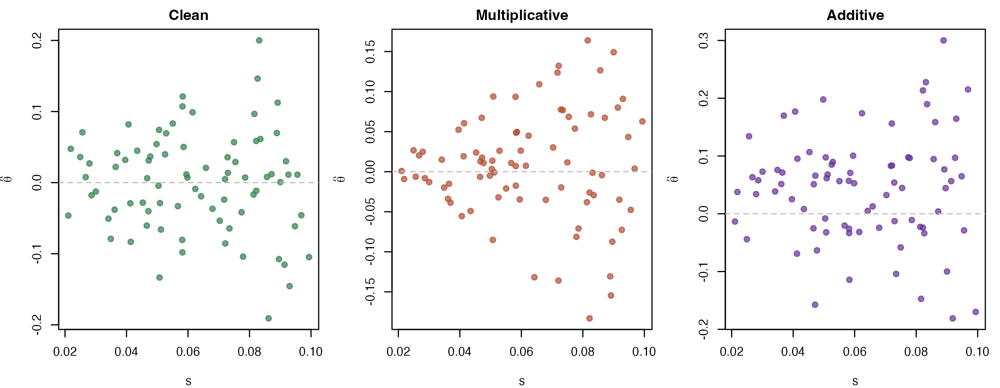
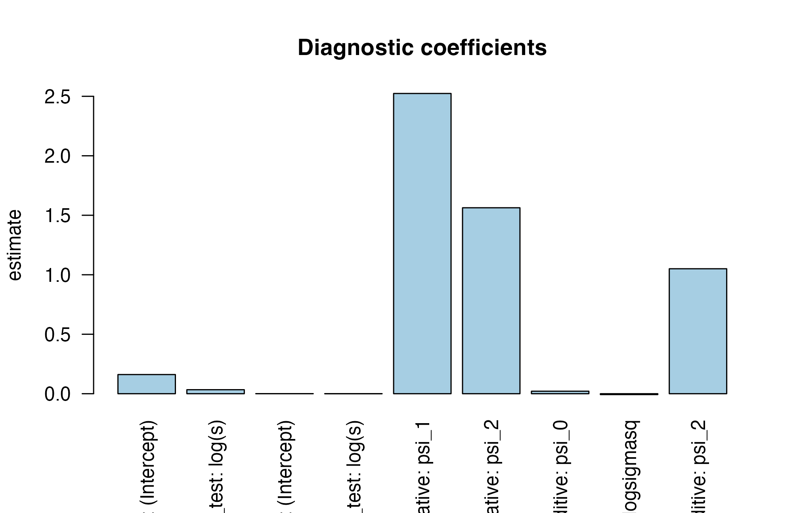

A4: Diagnostics and standardization - handling precision dependence
JoonHo Lee
2026-05-11
Source:vignettes/a4-diagnostics-and-standardization.Rmd
a4-diagnostics-and-standardization.RmdAbstract
Empirical Bayes’ classic derivation assumes the noise s_j is
independent of the parameter theta_j. In real audit,
value-added, and policy datasets, that independence often fails —
small firms have larger SEs and more extreme estimates,
or vice versa. This vignette teaches you to detect precision
dependence with eb_diagnose() and standardize the
data with eb_standardize() so deconvolution remains
valid. We compare the additive and multiplicative parametric
families, fit psi-hat via NLLS through
precision_fit(), and visualize corrected versus
uncorrected priors. We also show why a small p-value alone is
misleading — magnitude of psi-hat-2 matters — and what to do when
J is too small for the diagnostic to be powerful. The narrative
emphasizes that diagnostics are not optional bureaucracy: they are
how you avoid a confidently wrong inference.
Prerequisite: this vignette assumes you have run the basic workflow in
vignette("a2-discrimination-workflow")at least once. If you have not, start withvignette("a1-getting-started").
1. The precision-independence assumption
The classic EB recipe assumes:
That is: the true effect is independent of the sampling noise scale . When the assumption fails, even a perfectly fit prior produces biased posteriors.
“Two functional families capture the most common patterns of precision dependence:
- Multiplicative:
- Additive:
where is a precision-independent residual.” — Walters (Walters 2024, secs. 2.6, 3.7)
Execution ≈ 30 sec; reading + reflection ≈ 75 min.
2. What it looks like
Three flavors of (theta_hat, s) scatter, side by
side:
op <- par(mfrow = c(1, 3), mar = c(4, 4, 2, 1))
set.seed(1L)
# Clean
s <- runif(80, 0.02, 0.10)
th_clean <- rnorm(80, 0, 0.05) + rnorm(80, 0, s)
plot(s, th_clean, pch = 19, col = rgb(0.2, 0.5, 0.3, 0.7),
xlab = "s", ylab = expression(hat(theta)), main = "Clean")
abline(h = 0, lty = 2, col = "gray")
# Multiplicative (funnel)
th_mult <- exp(-0.2 + 1.5 * log(s)) * rnorm(80) + rnorm(80, 0, s)
plot(s, th_mult, pch = 19, col = rgb(0.7, 0.3, 0.2, 0.7),
xlab = "s", ylab = expression(hat(theta)), main = "Multiplicative")
abline(h = 0, lty = 2, col = "gray")
# Additive
th_add <- 0.05 + s^0.8 * rnorm(80, 0, 0.5) + rnorm(80, 0, s)
plot(s, th_add, pch = 19, col = rgb(0.4, 0.2, 0.6, 0.7),
xlab = "s", ylab = expression(hat(theta)), main = "Additive")
abline(h = 0, lty = 2, col = "gray")
Three diagnostic scatter patterns. Left: clean (no precision dependence). Middle: funnel (multiplicative). Right: tilted (additive).
par(op)KRW race resembles the middle panel — a strong funnel. KRW gender resembles the right panel — a weak tilt.
3. Running the diagnostic
data(krw_firms)
race <- eb_input(
theta_hat = krw_firms$theta_hat_race,
s = krw_firms$se_race,
unit_id = krw_firms$firm_id
)
diag <- eb_diagnose(estimates = race)
cat(diag$conclusion, "\n")
#> level dependence detected; no strong evidence of variance dependenceThe one-sentence $conclusion is the headline. The
CLI-decorated panel below breaks it into the two regressions (level vs
log(s), variance vs log(s)):
format_eb_diagnostic_cli(diag)4. Reading the recommendation
Isn’t precision dependence the same as heteroskedasticity?
Related but not identical. Heteroskedasticity = the noise variance changes with predictors. Precision dependence in EB = the signal also varies systematically with the noise scale . Standardization removes the second; weighted regression addresses the first.
The diagnostic reports:
- Conclusion: a one-sentence verdict (level, variance, both, or none)
- Level test: regression of on
- Variance test: regression of on
You should care about magnitude, not just p-values. With J = 97 firms, even can be “significant”.
5. Refitting with precision_fit()
For finer control of the standardization model:
pf <- precision_fit(diag)
format_eb_precision_fit_cli(pf)pf exposes the fitted coefficients
psi_0, psi_1, psi_2, their standard errors, and the
residual structure used downstream.
6. Standardizing the estimates
Once the model is chosen, eb_standardize() produces
residual-scale estimates (r, s_r):
std <- eb_standardize(estimates = race, diagnostic = diag)
summary(std)
#> <eb_estimates>
#> units: 97
#> source: manual
#> standardized: yes
#> theta_hat: mean=0.866 sd=1.039 range=[-2.459, 3.431]
#> s: mean=0.855 range=[0.497, 1.525]The summary should show theta_hat (now on residual
scale) with mean near zero and SD roughly 1 — the deconvolution
target.
7. What happens if you skip standardization
Compare priors fit with vs without standardization. The unstandardized prior absorbs the level dependence as spurious spread, giving over-shrunken posteriors for small firms.
plot(diag)
Diagnostic scatter for KRW race: raw theta_hat vs log(s), with the fitted multiplicative model overlay.
8. Custom starting values for hard cases
For weakly-identified data (KRW gender is the canonical example), the
NLLS fit can be sensitive to starting values.
precision_fit() accepts a model = argument to
choose between multiplicative, additive, and
none:
# Force additive even if diagnose recommends multiplicative
pf_add <- precision_fit(diag, model = "additive")Convergence is recorded in pf$convergence (0 =
success).
9. Sample-size caution (J < 50)
With J < 50, even the diagnostic regressions are underpowered. A simulated demonstration:
# Illustrative small-J case: simulate 20 schools, fit linear VAM,
# then diagnose the school-level estimates.
sim_small <- eb_simulate(J = 20, sigma_theta = 0.10)
fit_small <- eb_vam(y ~ x | school_id, data = sim_small$students,
method = "linear")
diag_small <- eb_diagnose(estimates = fit_small$estimates)
diag_small$conclusion
#> [1] "no strong evidence of level dependence; no strong evidence of variance dependence"In small-J regimes, prefer the linear EB recipe
(method = "linear" in eb() or
eb_vam()) — it has fewer degrees of freedom to overfit.
Practical pitfalls
-
p-value alone is misleading. Even
p < 0.001forpsi_2does not justify standardization if is tiny in magnitude. -
Standardized scale loses interpretability.
Residual-scale estimates are useful for deconvolution and shrinkage, but
reporting needs the original scale — use
eb_change_of_variables()to back-transform. -
Gender weak-identification (KRW). Documented in
companion lessons-learned: gender
NLLS is sensitive to starting values. Always inspect
pf$convergenceandpf$psi_se.
Where to next
-
Apply the fix: return to
vignette("a2-discrimination-workflow")and re-run with the recommended model. -
FDR + decision rules:
vignette("a5-visualization-cookbook")shows the decision frontier with corrected priors. -
Theory:
vignette("m4-precision-dependence-and-fdr")derives the conditional prior and the back-transform Jacobian.
Provenance
sessionInfo()
#> R version 4.5.1 (2025-06-13)
#> Platform: aarch64-apple-darwin20
#> Running under: macOS Tahoe 26.2
#>
#> Matrix products: default
#> BLAS: /Library/Frameworks/R.framework/Versions/4.5-arm64/Resources/lib/libRblas.0.dylib
#> LAPACK: /Library/Frameworks/R.framework/Versions/4.5-arm64/Resources/lib/libRlapack.dylib; LAPACK version 3.12.1
#>
#> locale:
#> [1] en_US/en_US/en_US/C/en_US/en_US
#>
#> time zone: America/Chicago
#> tzcode source: internal
#>
#> attached base packages:
#> [1] stats graphics grDevices utils datasets methods base
#>
#> other attached packages:
#> [1] ggplot2_4.0.2 ebrecipe_0.5.0
#>
#> loaded via a namespace (and not attached):
#> [1] gtable_0.3.6 jsonlite_2.0.0 dplyr_1.2.0 compiler_4.5.1
#> [5] tidyselect_1.2.1 dichromat_2.0-0.1 jquerylib_0.1.4 splines_4.5.1
#> [9] systemfonts_1.3.1 scales_1.4.0 textshaping_1.0.1 yaml_2.3.12
#> [13] fastmap_1.2.0 R6_2.6.1 generics_0.1.4 knitr_1.50
#> [17] htmlwidgets_1.6.4 tibble_3.3.1 desc_1.4.3 bslib_0.9.0
#> [21] pillar_1.11.1 RColorBrewer_1.1-3 rlang_1.1.7 cachem_1.1.0
#> [25] xfun_0.53 fs_1.6.6 sass_0.4.10 S7_0.2.1
#> [29] cli_3.6.5 withr_3.0.2 pkgdown_2.2.0 magrittr_2.0.4
#> [33] digest_0.6.39 grid_4.5.1 lifecycle_1.0.5 vctrs_0.7.2
#> [37] evaluate_1.0.5 glue_1.8.0 farver_2.1.2 ragg_1.4.0
#> [41] rmarkdown_2.30 tools_4.5.1 pkgconfig_2.0.3 htmltools_0.5.8.1